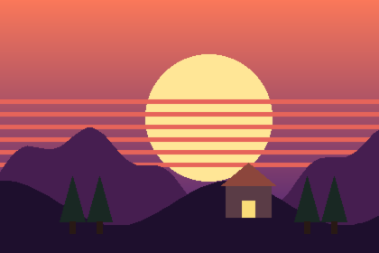
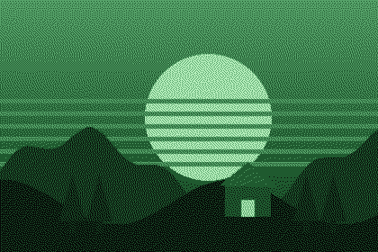

Drove out before sunrise and got the tent up just as the sky turned. Two pictures below, one of the ridge.
sunset.png

The ridge at first light:
ridge.png

Tomorrow: the lighthouse walk ##trips/coast
P4 · Inline (later) — Pictures sit in the flow exactly where the ![…] line is. Needs the custom cosmic-text editor (build step 3); shown so the strip/rail can be judged against it.